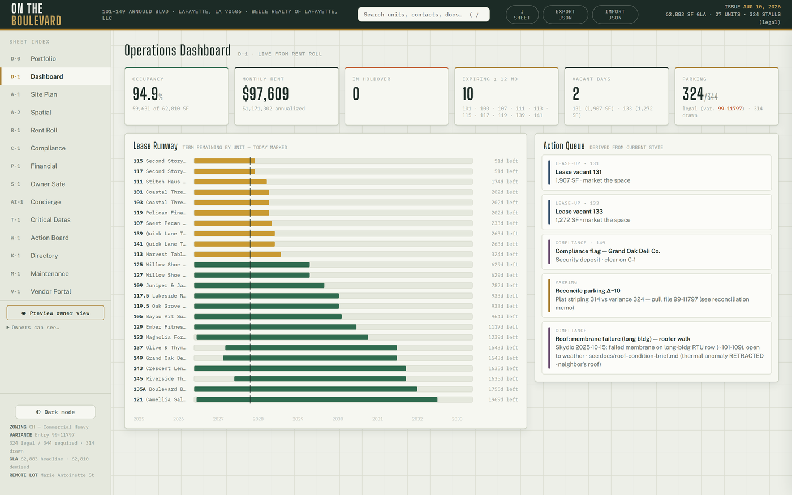
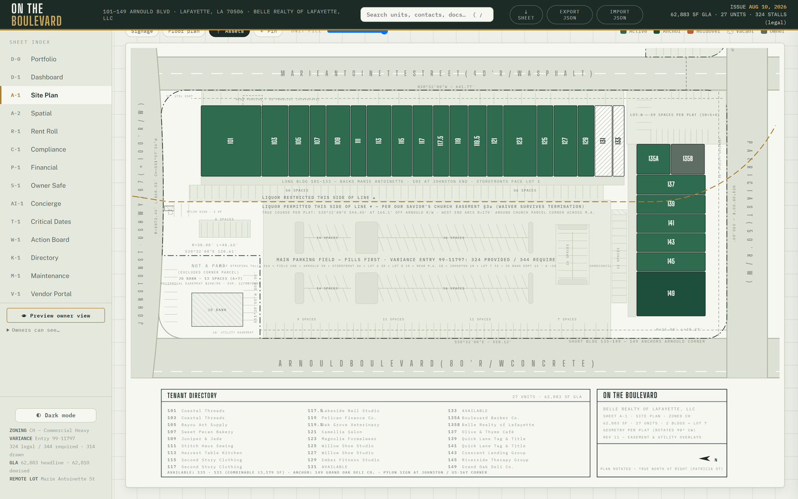
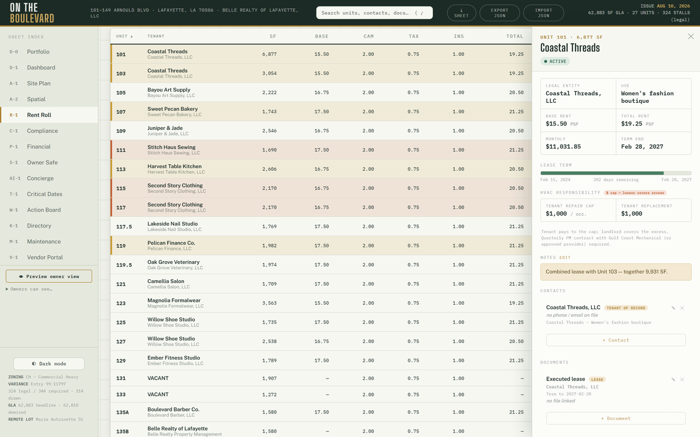
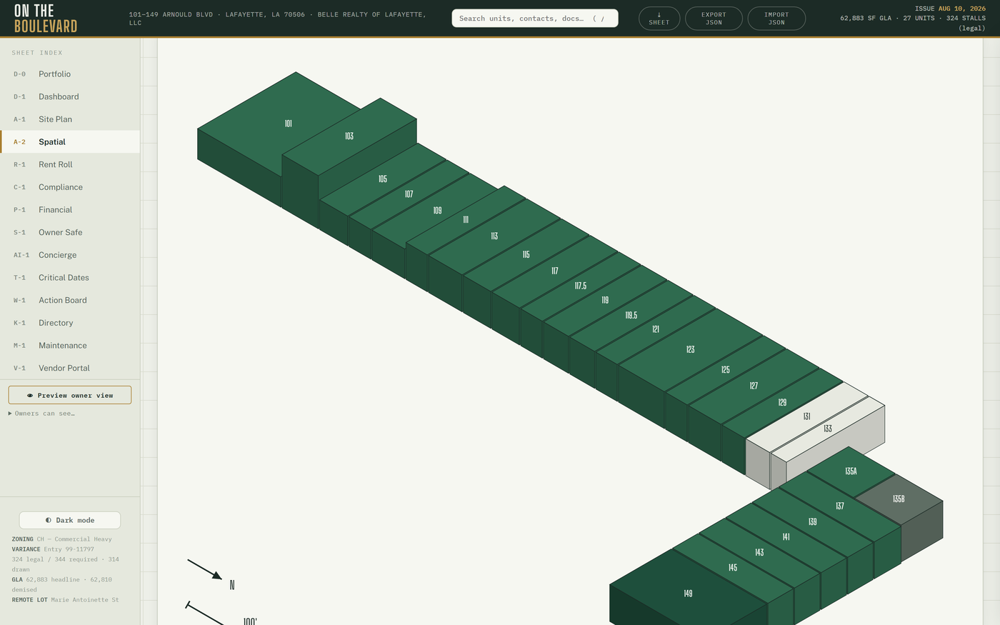
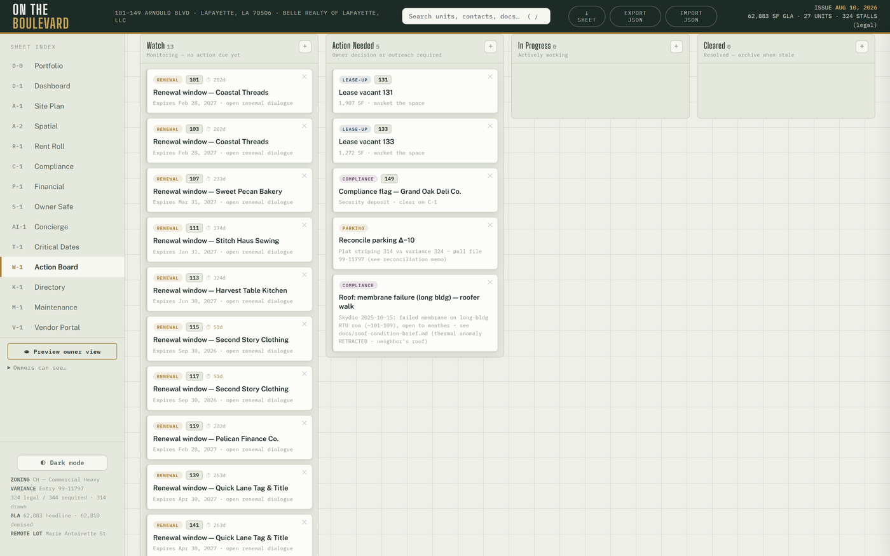
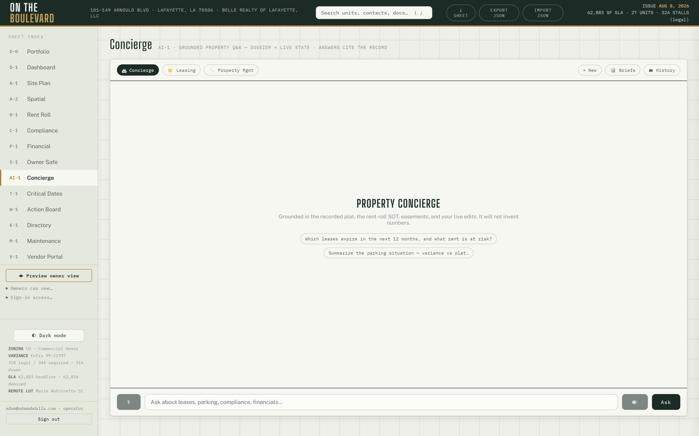

The Atlas story.
Atlas is the private command center that runs Adam's 27-unit shopping center in Lafayette. This page walks through what it actually does, and the point hiding under every feature: none of it was possible until the documents were ready. The foundation came first. Atlas is what it carried.
For years the property's knowledge lived where most business knowledge lives: paper leases in cabinets, PDFs scattered across drives, numbers in spreadsheets, and the rest in memory. The turn was not a better AI tool. The turn was the unglamorous work this guide teaches: every record digitized, named, classified by authority, and governed by written rules. Once that existed, one operator with AI help built Atlas on top of it. Here is what stands on that foundation now.
About the pictures: every screenshot on this page comes from the Atlas operator manual. The tool, the sheets, and the property geometry are real; the tenant names and figures are the manual's demonstration dataset, kept separate from the live records on purpose.

A drawing set, not a dashboard
Atlas is organized like an architect's drawing set: fourteen numbered sheets, from D-1 Dashboard and A-1 Site Plan through R-1 Rent Roll, C-1 Compliance, S-1 Owner Safe, and AI-1 Concierge. The sidebar reads like a title block. Everything about the property has an address, which is the whole Groundwork idea expressed as an interface: knowledge with a place for everything, and everything in it.

The features, and what each one stands on
Click any unit, know everything Order 2 · Knowledge
Click a unit on the site plan, the rent roll, the 3D view, or the satellite lens and a drawer opens with everything about it: lease term progress, economics, notes, contacts, documents, photos, compliance rows, and its ledger. One click, the whole file.
Stands on: every unit's documents digitized, named, and filed so a machine can assemble the whole picture instantly.

Four ways to see the property Order 1 · Identity of place
The Spatial sheet has four lenses: an isometric drawing with real CAD heights, an orbitable 3D massing, a georeferenced satellite view, and a photoreal Reality view built from drone capture. Pick a unit in one lens and it is selected in all of them.
Stands on: the recorded plat, measured geometry, and a documented capture of the real place, treated as records like everything else.

A to-do list that writes itself Order 5 · Continuity
The Action Board seeds its own cards from live facts: a renewal window opening, a vacancy, a compliance flag, an aging work order. Nobody remembers to create a card for an expiring lease. It appears on its own, and a dismissed card only returns if the underlying fact returns.
Stands on: dated obligations living in structured, trusted files instead of in someone's head.

Three AI staff who cite the record Orders 2 + 3 · Knowledge, governed
A Concierge for property questions, a Leasing agent, and a Property Manager persona, all grounded in the property's dossier and live state. The numbers are guardrailed: once a calculation is involved, every figure in a reply must trace to the deterministic engines or the reply is replaced with the engine's own summary. Ask the manager whether a $45K roof unit replacement makes sense against the reserve, and the answer comes from the record, not the vibe.
Stands on: a source-of-truth pack the system ranks first, exactly the authority discipline Order 2 teaches.

Phone lines that answer at 3 a.m. Order 3 · Governance
A 24/7 tenant line triages by the written SOP: real emergencies dispatch and notify immediately, routine requests become work orders, and nothing wakes the operator for permission. A leasing line quotes only the approved rate range and books tours with truthful booking enforced: the agent cannot claim a tour is booked unless the booking actually succeeded.
Stands on: written escalation rules and an approved-answers boundary. The AI has a script because the owner wrote one.
Money that reconciles itself Order 3 · Automation, safely
Rent charges post themselves on the first of the month. ACH payments match themselves to units when they settle, and a payment that cannot be matched opens a thread instead of landing silently. Late-fee suggestions appear after the grace window but post only when a human confirms. Voids create reversing entries; nothing is ever deleted.
Stands on: the three-zone rule from Order 3: auto-run the safe things, draft and wait where judgment matters, never automate the rest.
A history no one can corrupt Order 6 · Measurement
Every compliance cell flip is recorded: who, when, from what to what. Corrections are new entries, never edits. The Owner Safe logs every view, upload, and delete. The system's memory is append-only, which means its history can be trusted the way its documents can.
Stands on: governance rules that decided, in writing, that history is evidence.
Everyone sees exactly their slice Order 3 · Access boundaries
No passwords. A magic link signs each person in and the system resolves their role: the owner lands read-only on the sheets chosen for them, a vendor sees only their portal and assigned work orders, a tenant sees only their own unit and balance. Anyone else lands on a holding screen with no data.
Stands on: access boundaries written down before the tool existed, then enforced by it.
It watches itself Order 6 · Operating Rhythm
A daily automated scan checks renewals, holdovers, occupancy, payment matching, and its own safety nets, and opens exactly one thread per condition only when something changed. If there is nothing new, there is nothing there. On the first of each month, the owner's intelligence brief writes itself, every figure deterministic, archived permanently.
Stands on: a written cadence. The rhythm layer, running without being asked.
And you can walk away with all of it The Groundwork premise
One click exports the entire state as a portable file, and the underlying system is plain files under version control. The tool serves the records. The records do not belong to the tool.
Stands on: the ownership rule this whole guide starts from: your knowledge, in files you keep, readable by whatever comes next.
The order was the breakthrough. Read the list again and notice what is missing: none of these features is exotic AI. Each one is ordinary logic standing on extraordinary preparation. The site plan works because the plat was filed. The concierge cites the record because a record exists and is ranked. The phone line knows what counts as an emergency because someone wrote it down. Groundwork exists to get you to that starting line, and Atlas is what one operator built after crossing it.
Atlas itself is private, owners and operator only, and it is not for sale. What is for sale is nothing: the method that made it possible is this free guide. Start with your first 30 minutes, or find your gap with the scorecard. If you want your own version of this story, the audit is where it starts.